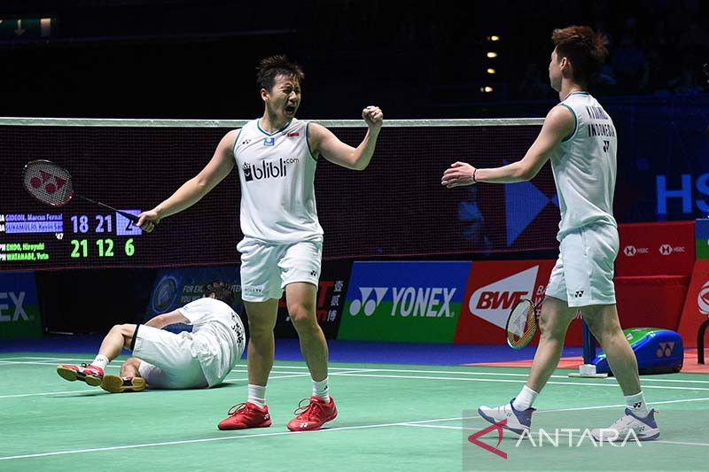

Sandiaga sebut MotoGP Mandalika jadi momentum pemulihan ekonomi
Jakarta (ANTARA) - Permainan penuh tekanan dialami ganda putra peringkat satu dunia, Kevin Sanjaya Sukamuljo/Marcus Fernaldi Gideon, pada babak perempat final All England saat menghadapi Satwiksairaj Rankireddy/Chirag Shetty yang berakhir dengan kemenangan menuju semifinal, Jumat.
Pada gim pertama, Minions sudah berada di ambang kekalahan saat tertinggal 15-20. Namun secara mengejutkan mampu mengejar poin demi poin dan berbalik unggul dengan kemenangan dua gim langsung 24-22, 21-17.
"Di gim pertama kami buat banyak kesalahan, terutama dari servisnya. Mungkin kami kehilangan dua atau tiga poin, tapi ya kemudian di skor 15-20 kami mengejar dan menjadi lebih percaya diri. Di gim kedua kami tidak terlalu memikirkan kesalahan tadi," kata Marcus seperti dilansir BWF di laman resminya.
Gim kedua, ganda putra peringkat kedelapan asal India kembali menekan hingga terjadi perebutan poin yang alot. Minions tak mau kalah dan bermain lebih sabar untuk menambah poin keunggulan.
Dalam waktu 47 menit, unggulan teratas itu mengunci posisi mereka ke babak empat besar All England sekaligus membukukan kemenangan 11-0 dalam catatan pertemuannya dengan Satwiksairaj/Chirag.
"Di gim pertama kami mau kalah, tapi ya sudah main tanpa beban saja. Kami tetap fokus, berusaha yang terbaik dan nikmati permainan, kejar poin demi poin saja," kata Kevin soal persaingan di gim pembuka.
Setelah laga hari ini, Kevin/Marcus akan fokus dan melakukan pemulihan untuk menghadapi laga semifinal Sabtu. Mereka mengaku sangat bersyukur bisa kembali ke babak semifinal All England untuk keempat kalinya.
"Kami ya sangat senang bisa kembali lagi ke semifinal All England, tapi besok pasti akan jadi pertandingan yang sulit jadi kami akan lebih fokus," ungkap Marcus.
Pada babak semifinal, Minions berpotensi menjalani laga sesama timnas Indonesia melawan Bagas Maulana/Muhammad Shohibul Fikri asalakan mereka bisa mengalahkan unggulan ketiga asal Jepang Takuro Hoki/Yugo Kobayashi.
Saat ini laga antara Bagas/Fikri dan Hoki/Kobayashi tengah berlangsung. Kevin/Marcus pun lebih memilih menghadapi junior mereka daripada berhadapan dengan Hoki/Kobayashi yang kini sedang dalam puncak performa.
"Ya jelas mereka (Hoki/Kobayashi) tidak mudah bagi kami, tapi kami akan berusaha yg terbaik. Tapi hari ini saya rasa Bagas/Fikri akan menang," pungkas Kevin yang diikuti tawa.